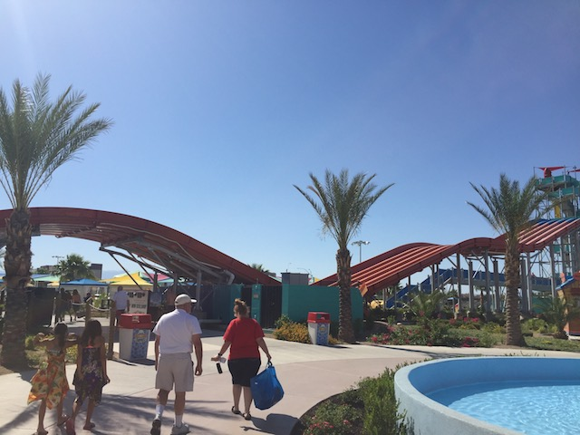

| |
Surfin' U.S.A Review

We're here at Cowabunga Bay (Las Vegas), where we'll be reveiwing Surfin' U.S.A. The parks racing waterslide. And....this is not an ordinary racing water slide. This one actually has a unique twist to it that really makes it stand out. First you grab your mat, drag it up the stairs, and get ready. Then when the lifeguard lets you go, get yourself a REALLY good start. Normally, you do this so you can win. But on Surfin' U.S.A, this ride isn't about winning. Sure, you can try and make it a competition if you're really bold. But....this definately is unique. Anyways, launch off, head down those bumps. Normally, this would be the end. But WHAT'S THIS!!!? A HUMP!!! Yes. This ride freaking ends with a hump. The reason you don't care about winning is because....this ride is less of a traditional contest and more of.....just get over the hump. Trust me, I saw LOTS of people fail. This ride sort of operates on a pass or fail system, depending on if you make it. I BARELY made it over. But at least I passed (barely). Then you skid across the water. And let me tell you, that ending hump just makes it so much more fun. And....as far as I could tell, this is actually unique and ONLY avaliable here at Cowabunga Bay Las Vegas. I checked the manufacters website. They offer this slide, but only showecased pictures of this slide, leading me to believe that this was the only one purchased and built (at the time of writing this review at least). Please build more as they are a ton of fun.
7/10
Location: Cowabunga Bay (Las Vegas)
Opened: 2014
Built by: Polin Waterslides
Last Ridden: June 5, 2017
Surfin' U.S.A. Photos

Home
|